Designing a workforce management tool that empowered ops teams with automation, visibility, and control—while saving $320k annually
What is prior authorization?
Prior authorization is the process where physicians request approval from health insurance companies before treating a patient. Insurers use it to control costs and make sure treatments are medically necessary.
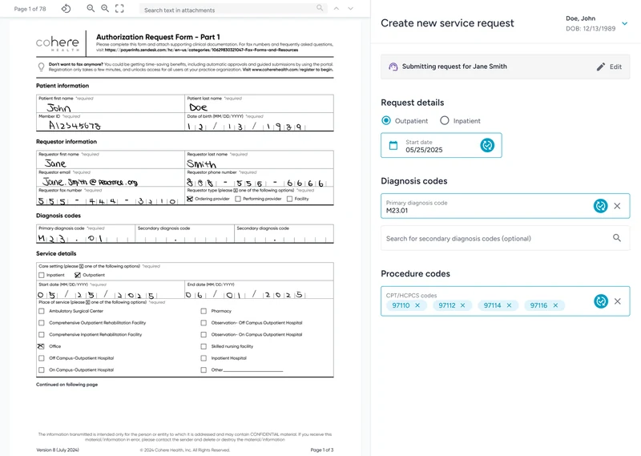
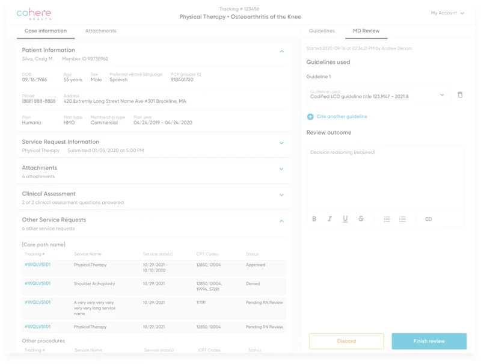
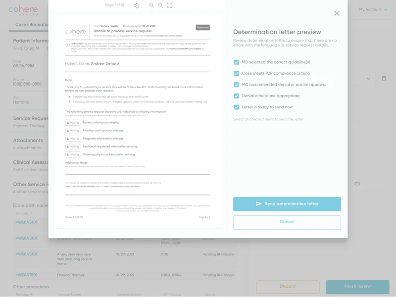
At Cohere Health, 6,000+ of these submissions land on the ops team every day, and each one has to be processed manually across fax intake, clinical review, and denial letter writing.
The Problem
At 6,000+ submissions a day, that’s about 1.5 million authorizations a year, and each one has to be processed in a timely manner to meet business and compliance standards.
We’d already built product workflows for each of those functions. However, case routing and prioritization still happened in Salesforce, which presented many challenges.
Day to day, that meant:
Custom-built queues
Lots of customization required for each queue
Constant app switching
Salesforce isn’t native to Cohere, so users bounced between apps
No real-time reporting
Ops leaders lacked real-time visibility into the queues
Expensive licenses
$1,600 per license, across 250+ users
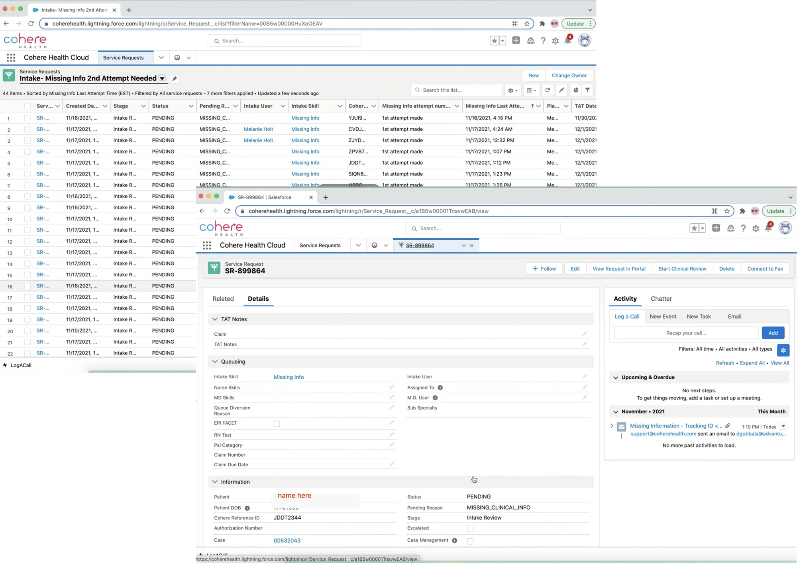
Research
Desk research
I partnered closely with the PM to investigate whether we should buy or build, and if we bought, what was already out there. Through secondary research, we concluded that we needed a highly specific product built around our operational needs. And because a client deal at the time hinged on this functionality, we were resourced with an engineering team to build it in-house.
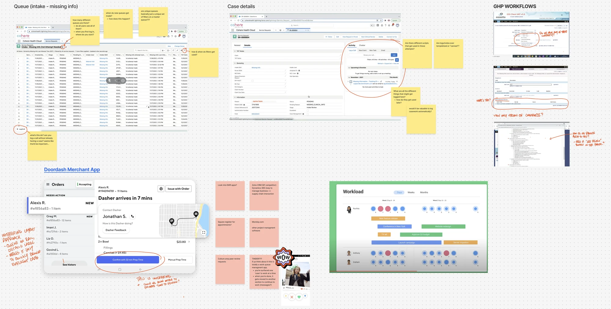
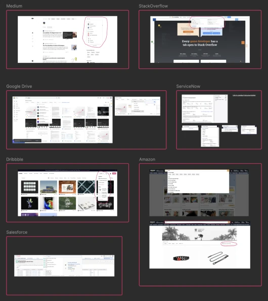
Interviews with intake specialists
After we decided to build in-house, I ran user research to understand where the current inefficiencies were, and which queue management tools our internal subject-matter experts had used at other utilization management (UM) companies. These sessions informed many of my early ideas. We then held an in-person onsite to organize our thoughts and set goals for the project.
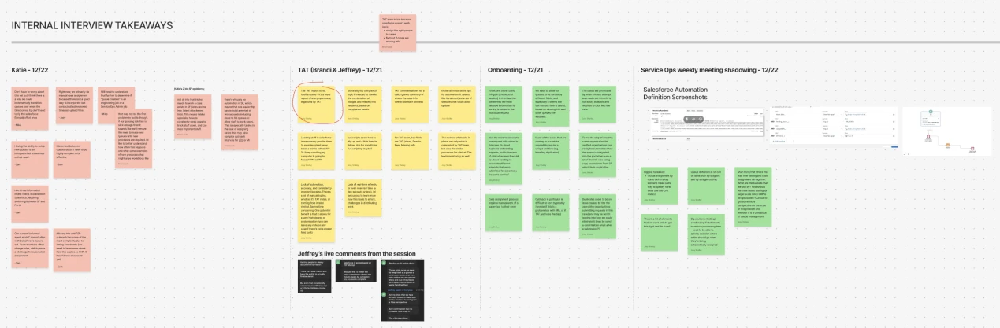
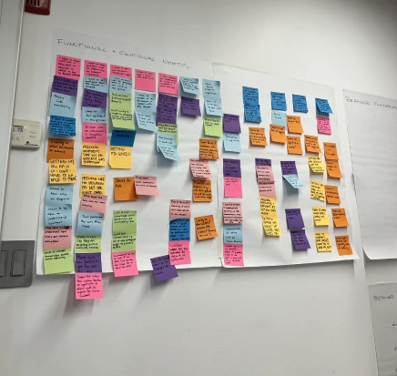
Starting with fax intake
The key takeaway from the onsite was that of all our operational workflow, fax is where we’d like to start for an MVP. There were 3 reasons for this:
- Simple assignment logic
- Easy prioritization (first in, first out)
- Most licenses saved (150+)
So… how might we create a native, less manual queue management experience for intake specialists so that they can process faxes more efficiently?
Goals
To make the problem statement measurable, I set three design goals. They were an extension of product metrics, with a stronger focus on the user:
Everything Salesforce does, but better
Intake specialists can quickly find the highest-priority case, and supervisors spend under 20% of their time on case assignment.
See how I designed it ↓ Goal 2Intake specialists feel accomplished when they finish a fax
Over 80% user satisfaction, compared to Salesforce’s baseline of 47%.
See how I designed it ↓ Goal 3Scale from 1 to 2, then to many
Start with fax intake as a proof of concept, then extend to higher-complexity workflows (like nurse review) within three months.
See how I designed it ↓Everything Salesforce does, but better
Challenge
Didn’t always know which case to work next.
That led to missed turnaround times (TAT), which are essential for compliance and can mean significant revenue loss.
Spent nearly 75% of their time manually assigning cases.
That pulled them away from higher-value work like coaching and team development.
Exploration
I like to start my design process with sketches. They help me generate a lot of ideas quickly and get feedback from engineers and stakeholders early.
One direction I explored, “case galaxy,” was a deliberate push-the-limit idea that surprisingly ended up informing the final solution.
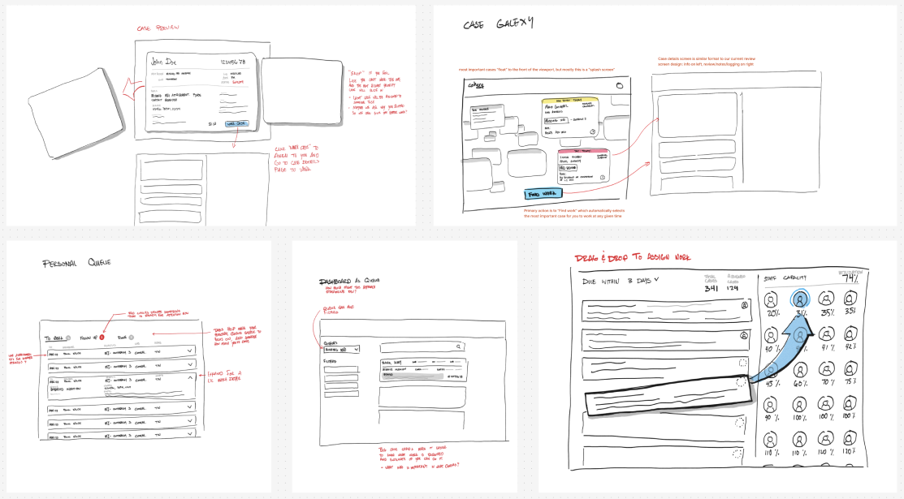
Final designs
There’s one unmissable action: start the next case, and the system finds the highest-priority one for them. Queue and personal metrics sit above case history.
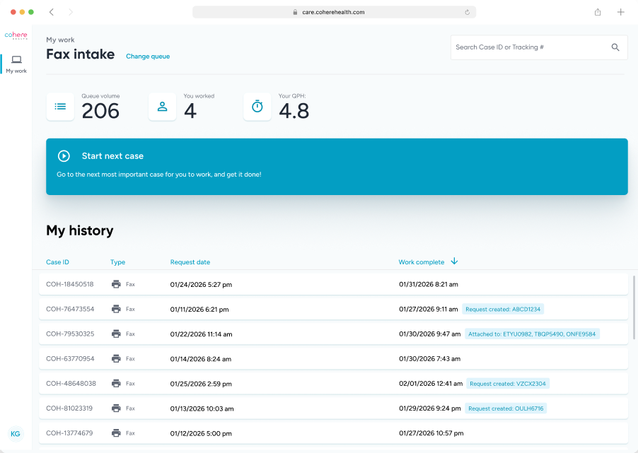
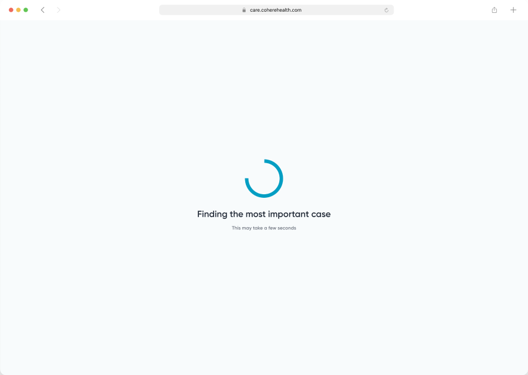
On top of the “My work” page, supervisors get visibility into a few more pages. Because auto-assignment handles most of the day-to-day, they only need to check the queue now and then for unassigned cases and reassign them. That leaves most of their time for coaching team members and strategic work.
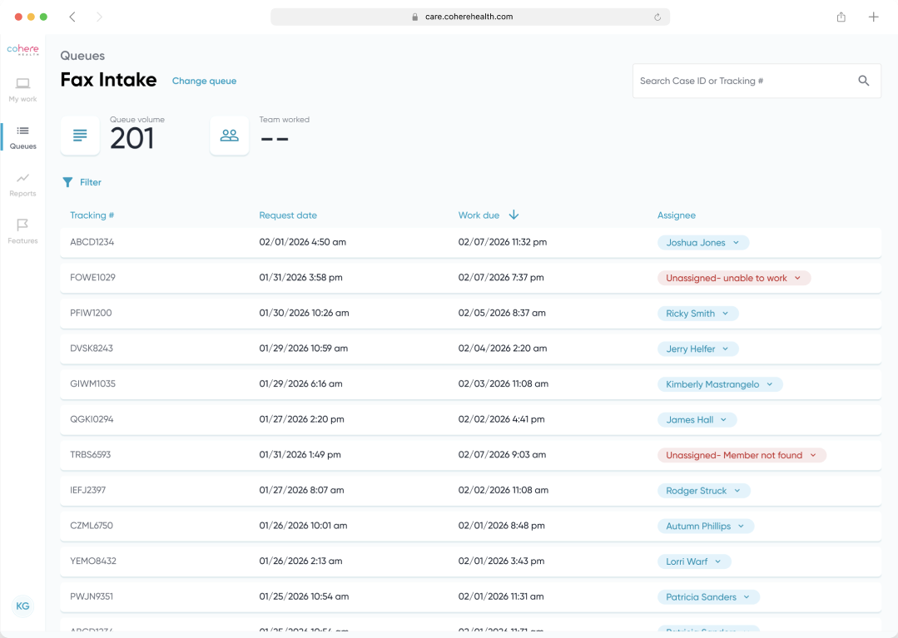
Intake specialists feel accomplished when they finish a fax
Pushing back and reframing
In talking to users, I found that a sense of accomplishment is what motivates intake specialists to stay engaged and do their best work. My PM called it a “nice-to-have” compared to functional needs and asked me not to spend time on it.
I pushed back with two points:
- Our baseline survey showed only 47% of intake staff rated Salesforce a 4–5 out of 5, and we had set a goal of 80% for Queue Management.
- “Inject joy into healthcare” is one of Cohere’s design principles, and this was a great opportunity to do exactly that.
Exploration
I explored several “work complete” screens, from team impact totals to case completion time to randomly generated GIFs.
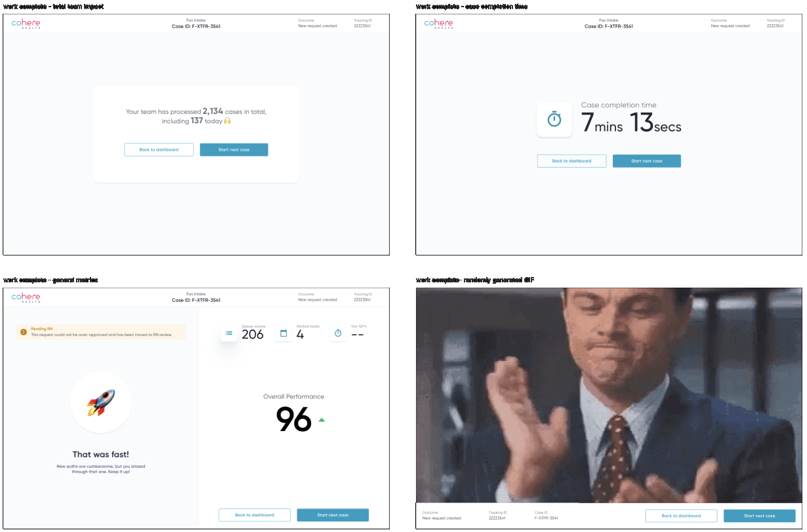
Scrappy research
Before settling on a final design, I ran quick 15-minute sessions with five users. I walked each person through the fax workflow, showed them the “work complete” explorations, and talked through their feedback.
To my surprise, the responses were mixed on how serious and how detailed the screen should be. Most users leaned toward fun but detailed, though, and that feedback directly informed my final designs.
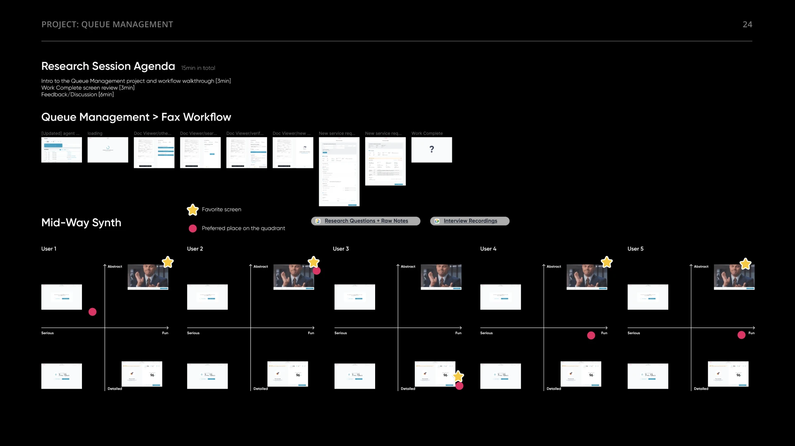
Final design
I wanted finishing a case to feel like a small win. The work complete screen celebrates with a random GIF (we hand-selected 500+ cheerful, product-appropriate ones), shows the case outcome and tracking details, and surfaces live queue and team metrics. Then one button starts the next highest-priority case.
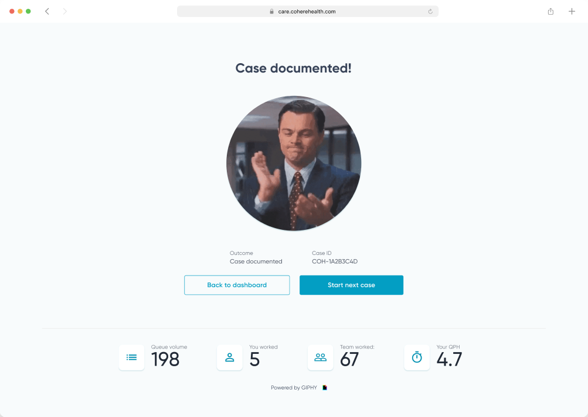
Feedback
“The work complete screen makes me feel good. I like the affirmation.”
Amana, intake specialist
“it’s like flowing, I’m just in the flow. I’ve never worked so fast.”
Cristina, intake specialist
Scale from 1 to 2, then to many
Fax intake alone drove a 45% increase in cases worked per hour within four months of researching, designing, and building it. The next step was expanding to clinical review.
Challenge
The biggest challenge we faced was that intake specialists and clinical reviewers have very different definitions of “good work,” so the same product had to serve two sets of needs.
Intake specialists
- Optimize for speed and volume
- Follow strict rules
- Motivated by efficiency metrics
- Non-clinical: treat all faxes equally
Clinical reviewers
- Optimize for clinical accuracy
- Define their own workflows
- Guided by judgment, not metrics
- Clinically trained: context matters
That shaped how each queue felt:
Fax intake work repetitive, high-volume
joy = momentum + light delight
Nurse review work clinical judgment, higher stakes
joy = confidence + clarity
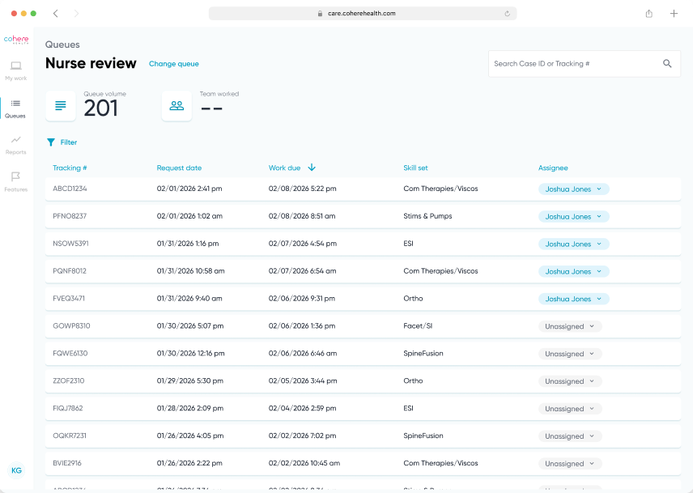
Beyond two personas
To scale beyond fax intake and clinical review, I also designed a configuration tool that let the team stand up new queues without custom engineering. That’s what took Queue Management to 15+ queues in the product.
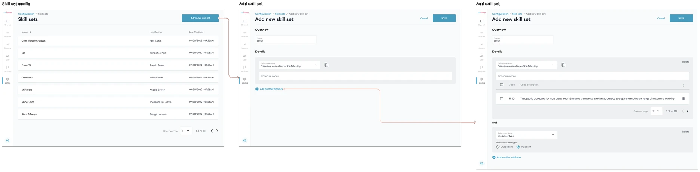
Outcomes and Learnings
In the first six months after launch, the team missed zero turnaround deadlines. Case assignment time dropped by 86%, new queues scaled in under three months, and replacing Salesforce saved $320k a year in licensing.
What I learned
Pick a starting point, prove the value, then scale. When a problem is big, I try to resist building everything at once. For this project, we started with fax intake, shipped it fast, and proved the value with a 45% increase in cases worked per hour before expanding to clinical review. We planned for scale from the start but left room to adjust, since intake specialists and nurse reviewers define “good work” differently.
Back design recommendations with data. Good ideas don’t always sell themselves. When my PM called the joy work a “nice-to-have,” I came back with evidence: only 47% of intake staff rated Salesforce a 4–5, and one of Cohere’s design principles is to “inject joy into healthcare.” Data turns “I think” into “here’s why.”
Sketch wide, share early, test with users. I start with sketches to explore far and wide, because the first idea is rarely the best one. On Queue Management, showing designs to engineers early surfaced feedback before changes got expensive, and testing with users showed me they wanted something fun but detailed. Even “case galaxy,” a wild push-the-limit sketch, ended up informing the final solution.